| Vùng | Vực Sâu Trung Tâm Hyrule bên dưới Nam Đồng Bằng Hyrule (Mỏ Trung Tâm Bỏ Hoang, Rừng Cây Linh Hồn, Mỏ Hylia Canyon, Đấu Trường Lơ Lửng), rồi lên mặt đất quanh Trạm Ngựa Outskirt, Núi Daphnes, Phế Tích Đấu Trường và chân Núi Satori |
|---|---|
| Điểm nhấn Vực Sâu | Năng lực Tự Động Xây, trận boss Master Kohga, Tinh Thể Kết Tinh Cỡ Lớn, Suối Thiêng Hồi Sinh, Quần Dài Thợ Mỏ, Mặt Nạ Majora (Đấu Trường Lơ Lửng), hoàn thành nhiệm vụ A Call from the Depths |
| Rễ Sáng | Rễ Sáng Mu-ustust (dưới Đền Thờ Nhỏ Tsutsu-um, -1423, -1351); Rễ Sáng Napanos nằm dưới Đền Thờ Nhỏ Sonapan (-1921, -359) |
| Đền Thờ Nhỏ | Đền Thờ Nhỏ Tsutsu-um (The Stakes Guide You, giải đố), Đền Thờ Nhỏ Sonapan (Missing Pathways, giải đố) |
| Hang | Hang Phế Tích Đấu Trường, Hang Núi Satori, Hang Hạ Lưu Sông Tamio |
| Giếng | Giếng Hồ Aquame, Giếng Trạm Ngựa Outskirt, Giếng Đồi Outskirt, Giếng Núi Daphnes |
| Ngọc Bubbul | 2 (Hang Phế Tích Đấu Trường, Hang Núi Satori) |
| Hạt Korok | Khoảng 74 hạt trong 69 chỗ, tính cả những cặp Korok đôi ở mục Hạt Korok cuối chương |
| Rương | 22: 9 rương dưới Vực Sâu và 13 rương trên mặt đất, trong hang và trong Đền Thờ Nhỏ |
| Nhiệm vụ | A Call from the Depths (hoàn thành), Master Kohga of the Yiga Clan (mở), Misko's Treasure of Awakening III (hoàn thành), The Beckoning Woman, A Picture for Outskirt Stable, Serenade to Kaysa, The Horse Guard's Request, Disaster in Gerudo Canyon (mở) |
| Miniboss | Master Kohga, Thunder Gleeok, Bàn Tay U Ám và Phantom Ganon, Battle Talus, Blue Hinox |
Chương này đi trọn phần Vực Sâu nằm bên dưới Nam Đồng Bằng Hyrule — Mỏ Trung Tâm Bỏ Hoang, Rừng Cây Linh Hồn, Mỏ Hylia Canyon và Đấu Trường Lơ Lửng — rồi quay lên mặt đất dọn phế tích, các rương Royal, bốn cái giếng và chân Núi Satori. Phần lớn thời gian bạn ở trong bóng tối, nên Hạt Sáng là món phải mang theo trước tiên.
Bảng trên tóm tắt cả chương trong một lần nhìn: vùng, điểm nhấn dưới Vực Sâu, Rễ Sáng, Đền Thờ Nhỏ, hang, giếng, Ngọc Bubbul, hạt Korok, rương, nhiệm vụ và miniboss. Bên dưới là tuyến đường chi tiết, chia đúng theo từng mục của chương.
Mục lục
Mục lục của chương gồm một mục tuyến đường nhanh, 14 mục đi đường và 1 mục tổng kết. Bấm vào từng dòng để nhảy thẳng tới mục đó, hoặc dùng mục lục dính ở cột trái.
- Tuyến đường nhanh
- Trước khi xuống Vực Sâu
- Mỏ Trung Tâm Bỏ Hoang
- Rừng Cây Linh Hồn, Suối Thiêng và Rễ Sáng Mu-ustust
- A Call from the Depths và Mỏ Hylia Canyon
- Trại Sundelion và Đấu Trường Lơ Lửng
- Mặt đất: phế tích, rương Royal và Hồ Aquame
- Phế Tích Đấu Trường và Hang Phế Tích Đấu Trường
- Đền Thờ Nhỏ Tsutsu-um
- Trạm Ngựa Outskirt và Người Phụ Nữ Vẫy Gọi
- Trạm Ngựa Mini, máy phát Thiết Bị và các giếng Daphnes
- Royal Bow, Đền Thờ Nhỏ Sonapan và Bình Máu
- Hang Núi Satori
- Hang Hạ Lưu Sông Tamio
- Hạt Korok
- Danh sách kiểm Vực Sâu Nam Đồng Bằng Hyrule
Tuyến đường nhanh
Tóm tắt cả chương trong năm chặng, từ mỏ dưới Vực Sâu tới chân Núi Satori.
- Bắt đầu ở Mỏ Trung Tâm Bỏ Hoang: mở hai rương Zonait Lớn, nhận năng lực Tự Động Xây, hạ Master Kohga rồi lấy Tinh Thể Kết Tinh Cỡ Lớn.
- Băng qua Rừng Cây Linh Hồn và Suối Thiêng Hồi Sinh để lấy hai Tinh Thể Kết Tinh Cỡ Lớn, thắp Rễ Sáng Mu-ustust, rồi mang bốn con mắt tới Tượng Bargainer để nhận Bình Máu.
- Mở rương Mũi Tên và Quần Dài Thợ Mỏ, dọn trại Sundelion và hạ năm con Lynel ở Đấu Trường Lơ Lửng để lấy Mặt Nạ Majora.
- Quay lên mặt đất: hạ Phantom Ganon, mở các rương Royal cùng Giếng Hồ Aquame, rồi làm Hang Phế Tích Đấu Trường (Quần Dài Thức Tỉnh, Ngọc Bubbul) và Đền Thờ Nhỏ Tsutsu-um.
- Quét Korok quanh Đồi Outskirt và Núi Daphnes, rồi kết thúc bằng Đền Thờ Nhỏ Sonapan, Hang Núi Satori và Hang Hạ Lưu Sông Tamio.
Trước khi xuống Vực Sâu
Bạn lao xuống Vực Sâu từ hố sụt phía nam Tháp Quan Sát Hyrule Field và thắp những Rễ Sáng đi ngang; mỗi Rễ Sáng đã thắp cũng là một điểm dịch chuyển nhanh. Mang theo Hạt Sáng, món ăn hoặc thuốc chống U Ám và vài vũ khí dự phòng: Đấu Trường Lơ Lửng bắt bạn đánh liền năm con Lynel không nghỉ.
Nhặt Poe dọc đường vì đó là tiền tệ ở Tượng Bargainer. Tên của một Rễ Sáng chính là tên Đền Thờ Nhỏ của nó viết ngược, nên Mu-ustust nằm dưới Tsutsu-um còn Napanos nằm dưới Sonapan. Trong mỏ thì đi xe goòng cho nhanh, và khi đã có Tự Động Xây thì dựng lại bè với dù lượn mà không cần gom nguyên liệu.
Mỏ Trung Tâm Bỏ Hoang
Mở hai rương Zonait Lớn
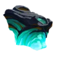
Rương (2 viên Zonait Lớn). Mỏ Trung Tâm Bỏ Hoang nằm quanh toạ độ -771, -1899, -663 trong Vực Sâu, ngay dưới phế tích Đền Thờ Thời Gian và vùng phía nam Tháp Quan Sát Hyrule Field. Trong đám phế tích đá của mỏ, một chiếc rương trên gờ thấp chứa một viên Zonait Lớn; chiếc thứ hai nằm dưới mái đá có cột ở tầng trên, cũng là Zonait Lớn. Nhớ mang Hạt Sáng vì trong mỏ tối om.Ảnh minh họa: hai rương Zonait Lớn (2 ảnh)
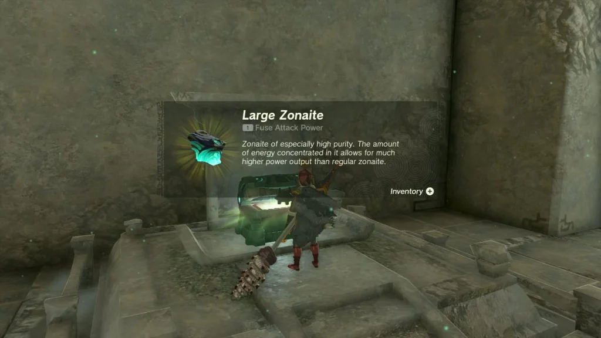
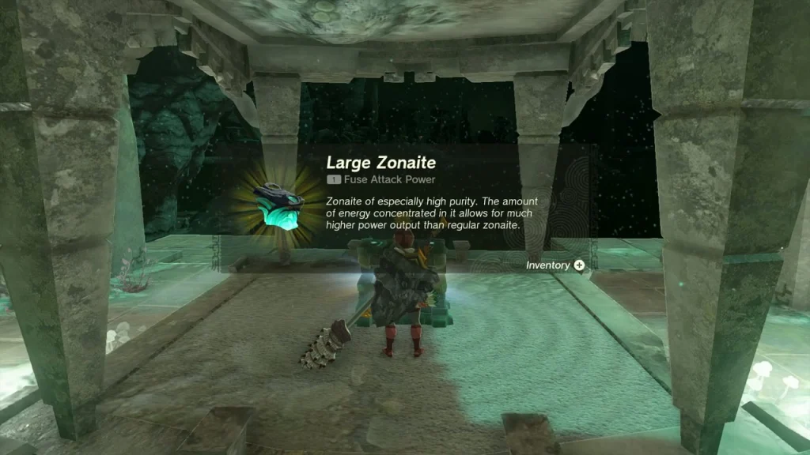
Học Tự Động Xây và hạ Master Kohga
Nhiệm vụ chính: A Mystery in the Depths, năng lực Tự Động Xây. Bước vào khu phế tích trung tâm là bạn nhận Tự Động Xây, năng lực dựng lại mọi thứ từng ghép bằng Siêu Tay chỉ với nguyên liệu. Ngay sau đó Master Kohga lao vào đánh trong một đấu trường bịt kín nên bạn không thể bỏ đi rồi quay lại; đòn chủ lực của hắn là lao thẳng, vì vậy cứ chạy, vòng ra sau xe khi hắn ập tới và để ý thể lực.
Né các cú lao, nấp sau cột lúc hắn lấy đà rồi đánh ngang hông. Chính trận này mở nhiệm vụ phụ Master Kohga of the Yiga Clan. Xong trận, chiếc rương cạnh Steward Construct chứa Tinh Thể Kết Tinh Cỡ Lớn, và Steward Construct trao bạn sơ đồ Máy Bay Quạt.
Ảnh minh họa: Tự Động Xây và Master Kohga (3 ảnh)
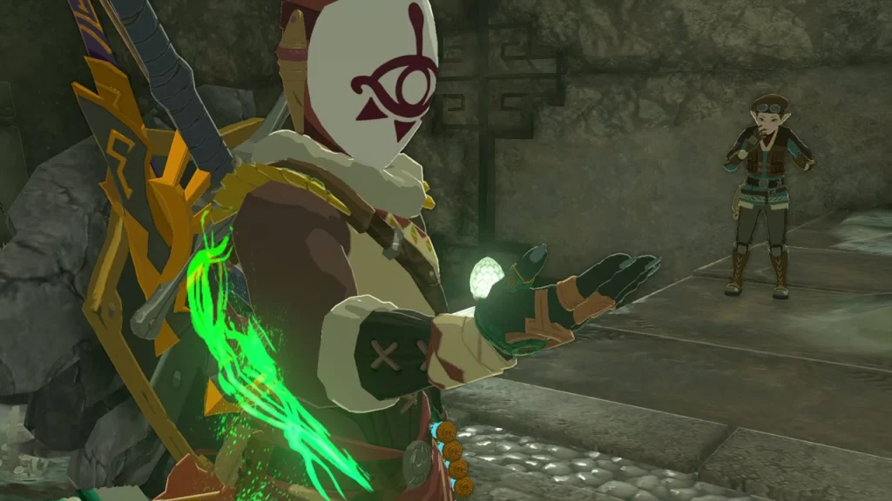
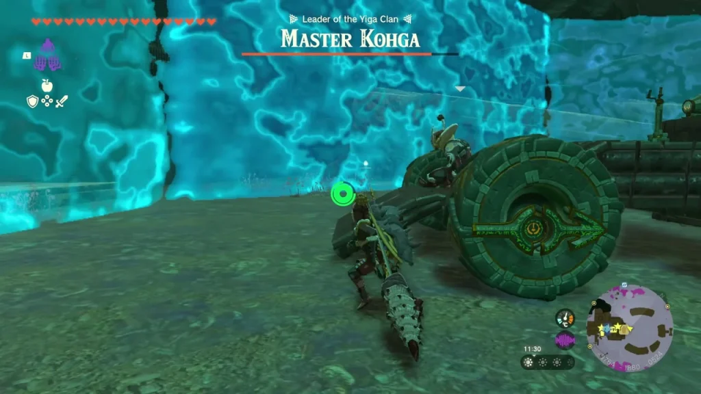
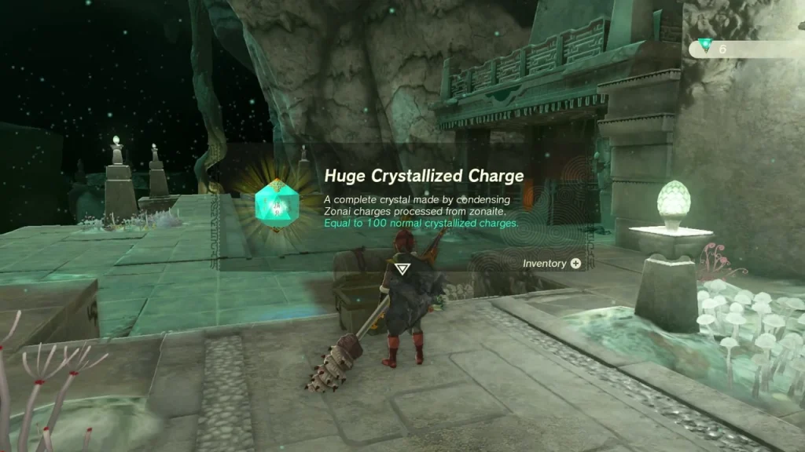
Rừng Cây Linh Hồn, Suối Thiêng và Rễ Sáng Mu-ustust
Đi theo dấu rương tới Rễ Sáng
Rương (2 viên Tinh Thể Kết Tinh Cỡ Lớn). Từ mỏ đi về phía đông nam vào Rừng Cây Linh Hồn, khu rừng toàn cây chết đầy Đom Đóm Vực Sâu. Một chiếc rương bị quái U Ám canh giữ quanh toạ độ -961, -1700, -531 cho một viên Tinh Thể Kết Tinh Cỡ Lớn. Đi tiếp tới Suối Thiêng Hồi Sinh (-1098, -1898), nơi ngâm mình hồi máu từ từ, rồi vòng qua phế tích phía đông suối (-1113, -1855, -575) lấy viên thứ hai trên bệ đá. Từ đó đi về phía tây bắc tới Rễ Sáng Mu-ustust ở -1423, -1351; lượn từ gờ đá xuống rồi chạm vào đám rễ để thắp. Rễ này nằm ngay dưới Đền Thờ Nhỏ Tsutsu-um.
Ảnh minh họa: Rừng Cây Linh Hồn tới Rễ Sáng Mu-ustust (3 ảnh)
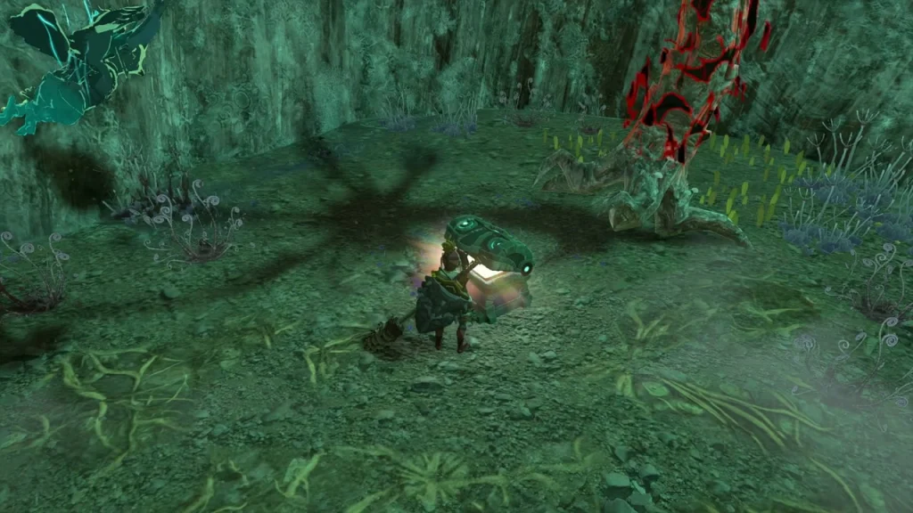
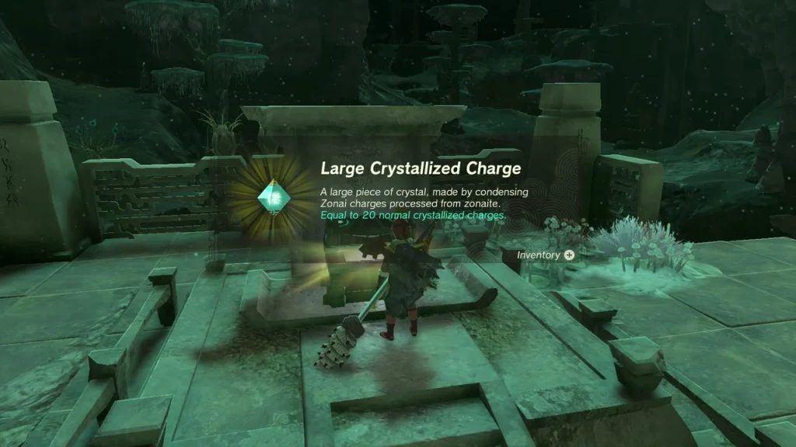
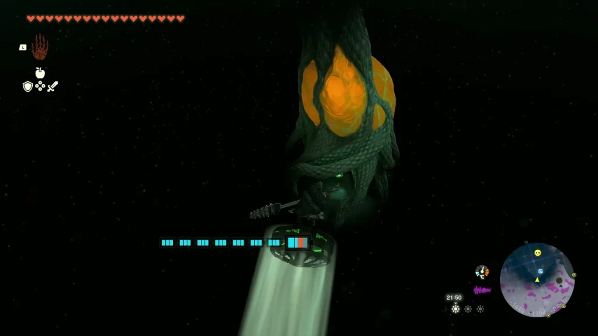
A Call from the Depths và Mỏ Hylia Canyon
Mở rương Mũi Tên và Quần Dài Thợ Mỏ
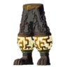
Rương (10 mũi tên, Quần Dài Thợ Mỏ). Trong lúc chở các con mắt, chiếc rương trên chiếc bè gỗ cạnh trại Bokoblin quanh toạ độ -649, -1676, -517 chứa 10 mũi tên (dọn trại cũng rơi thêm vũ khí). Xa về phía tây nam, Mỏ Hylia Canyon (-1293, -2194) có chiếc rương ở -1284, -2250, -707 cho Quần Dài Thợ Mỏ; mặc vào là bạn phát sáng trong bóng tối và đủ bộ Thợ Mỏ cùng Mỏ Daphnes Canyon.Ảnh minh họa: rương mũi tên và Quần Dài Thợ Mỏ (2 ảnh)
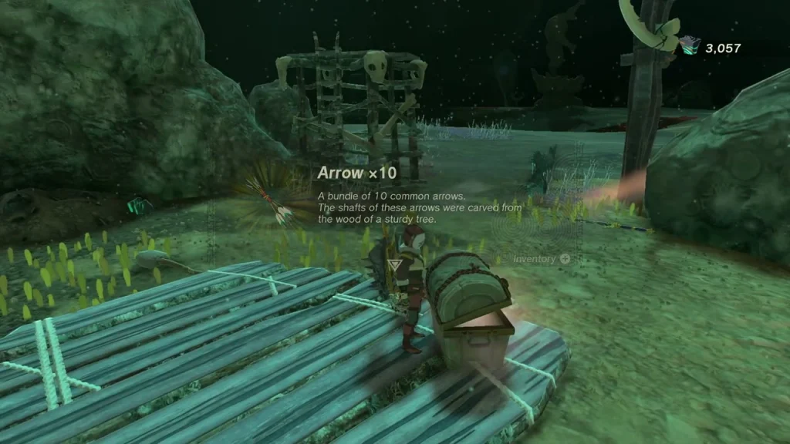
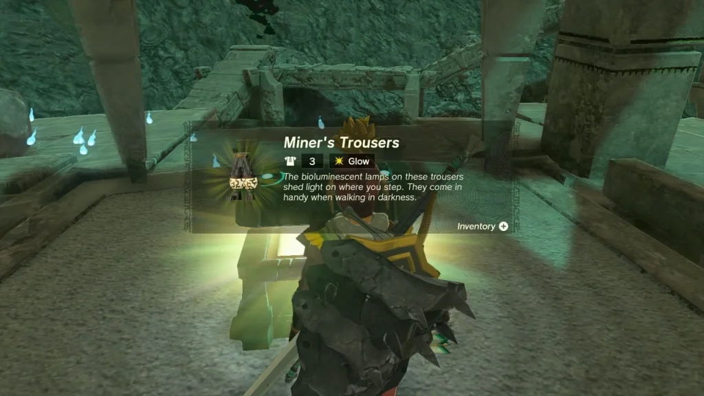
Mang bốn con mắt tới Tượng Bargainer
Nhiệm vụ phụ: A Call from the Depths. Nhiệm vụ bắt đầu ở Tượng Nữ Thần trên mặt đất, tại phế tích Đền Thờ Thời Gian: bạn ném bốn con mắt xuống bốn hố sụt, mỗi con rơi xuống Vực Sâu và hiện thành một dấu răng cưa trên bản đồ. Chở từng con tới Tượng Bargainer ở tầng dưới Mỏ Trung Tâm Bỏ Hoang (-780, -1903, -565); xe goòng và đường ray trong mỏ giúp đi nhanh hơn. Đặt con thứ tư xong, tượng cho bạn chọn phần thưởng: lấy Bình Máu hoặc Bình Thể Lực. Từ đó tượng hoạt động như một Tượng Bargainer để bạn tiêu Poe, ví dụ mua Gaiters of the Depths giá 200 Poe, món chống U Ám ở chân.
Ảnh minh họa: hoàn thành A Call from the Depths (2 ảnh)
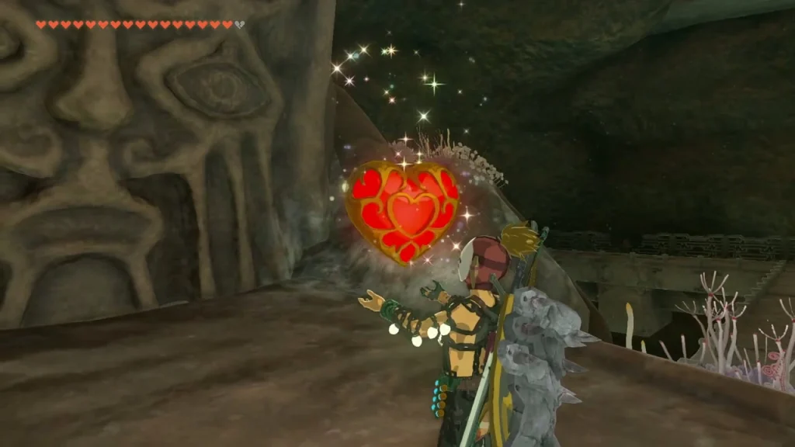
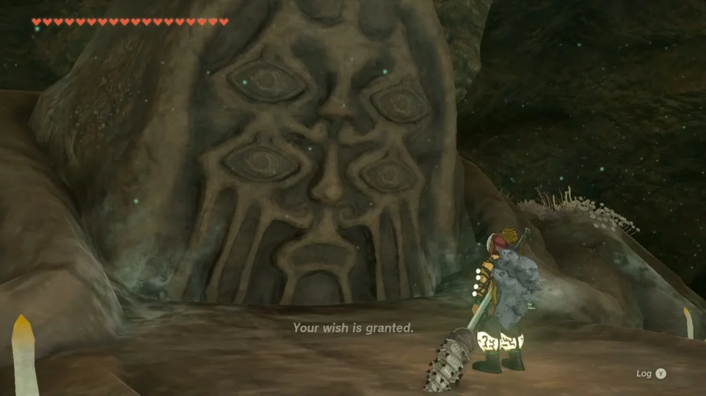
Trại Sundelion và Đấu Trường Lơ Lửng
Lấy Sundelion rồi vào Đấu Trường
Rương (Sundelion), Đấu Trường Lơ Lửng (Mặt Nạ Majora). Một trại Bokoblin trên giàn ván quanh toạ độ -1494, -991, -474 để thùng gỗ và rương trên chòi canh: mở ra được Sundelion. Đi tiếp về phía nam tới Đấu Trường Lơ Lửng (-1151, -1205, -377), có thể tới bằng bè hoặc lượn từ phía mỏ xuống. Leo vào đấu trường và hạ lần lượt năm con Lynel nhiễm U Ám; con cuối mặc giáp nên phải phá giáp trước, vì thế hãy mang vũ khí nặng và nhiều đồ ăn. Chiếc rương giữa đấu trường (-1151, -1263) sau đó mở ra Mặt Nạ Majora, món che đầu mặc được ở bất cứ đâu.
Ảnh minh họa: trại Sundelion và Đấu Trường Lơ Lửng (3 ảnh)
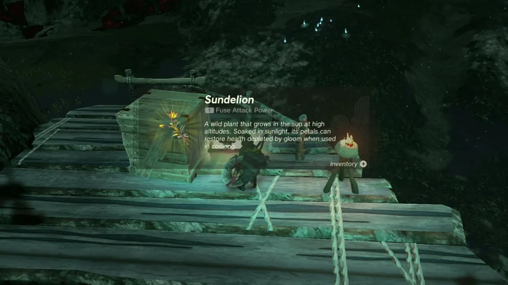
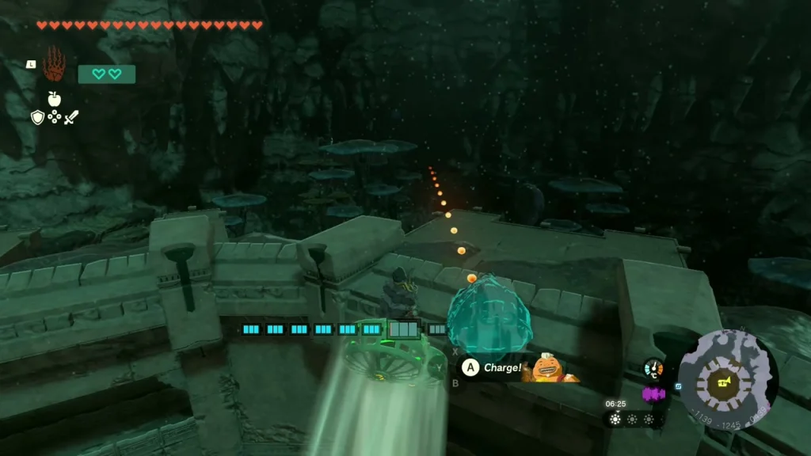
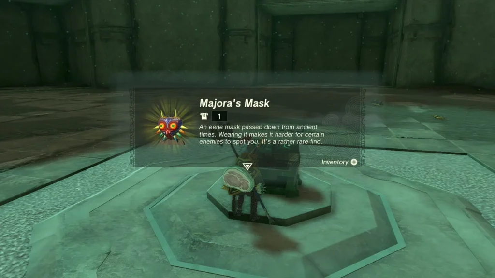
Mang sơ đồ về
Đá Sơ Đồ (Bệ Tên Lửa, Đồng Minh Tự Động). Hai Steward Construct ở xa không bán gì mà chỉ trao sơ đồ. Ở Mỏ Hebra Bỏ Hoang (quanh -3557, 1823), Steward Construct đưa bạn sơ đồ Bệ Tên Lửa; một Construct khác quanh -1640, 2388, -823 cho sơ đồ Đồng Minh Tự Động. Cả hai đều phải đi rất xa, nên bỏ qua nếu bạn chỉ dọn khu phía nam.
Ảnh minh họa: hai đá sơ đồ (2 ảnh)
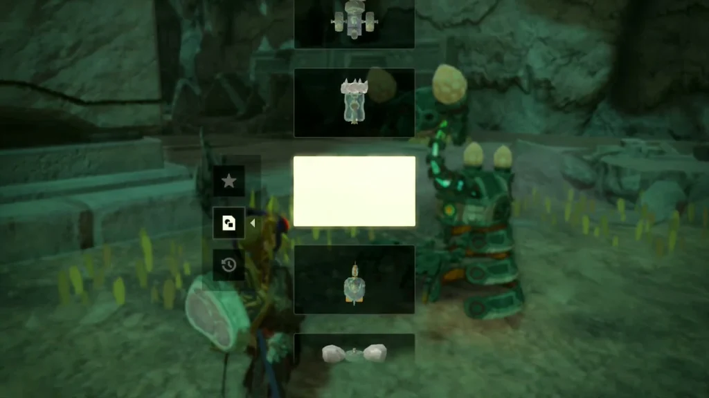
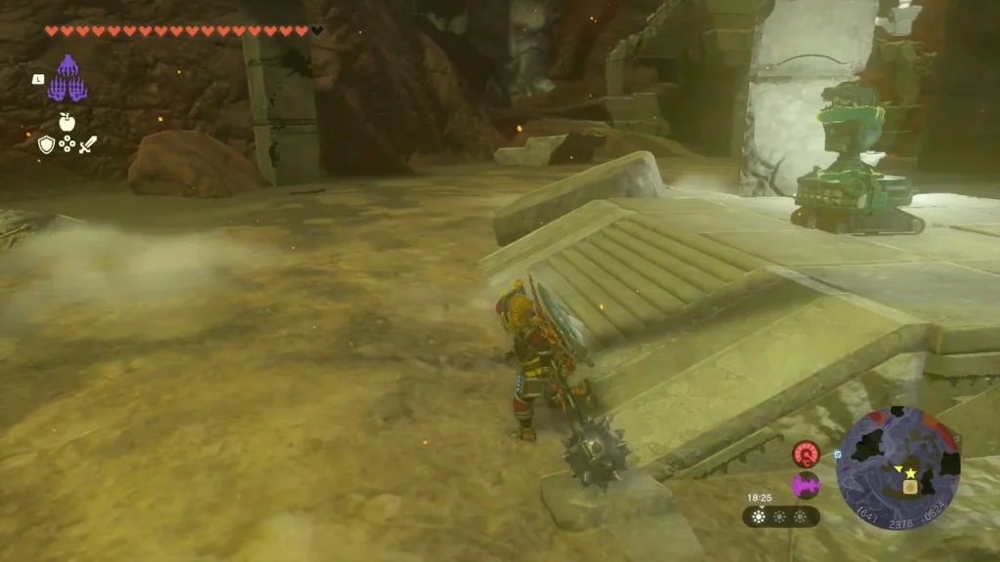
Mặt đất: phế tích, rương Royal và Hồ Aquame
Hạ Phantom Ganon và lấy Royal Shield
 Miniboss: Bàn Tay U Ám và Phantom Ganon; rương (Royal Shield, hoặc Traveler's Shield, Soldier's Shield, Knight's Shield tuỳ tiến độ). Một vũng U Ám quanh -445, -1275 trên cánh đồng tây bắc Hồ Aquame sinh ra Phantom Ganon. Bắn hoặc ném bom vào Bàn Tay U Ám trước, rồi đánh Phantom Ganon bằng kiếm mạnh và né những cú vung kiếm dài. Mở chiếc rương trong vòm đá đổ nát ngay đó để lấy Royal Shield.
Miniboss: Bàn Tay U Ám và Phantom Ganon; rương (Royal Shield, hoặc Traveler's Shield, Soldier's Shield, Knight's Shield tuỳ tiến độ). Một vũng U Ám quanh -445, -1275 trên cánh đồng tây bắc Hồ Aquame sinh ra Phantom Ganon. Bắn hoặc ném bom vào Bàn Tay U Ám trước, rồi đánh Phantom Ganon bằng kiếm mạnh và né những cú vung kiếm dài. Mở chiếc rương trong vòm đá đổ nát ngay đó để lấy Royal Shield.
Ảnh minh họa: Phantom Ganon và rương Royal Shield (2 ảnh)
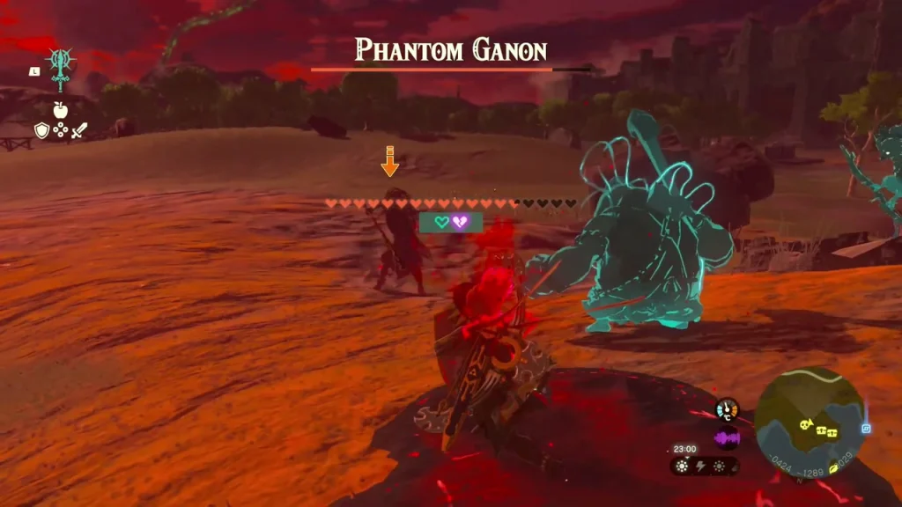
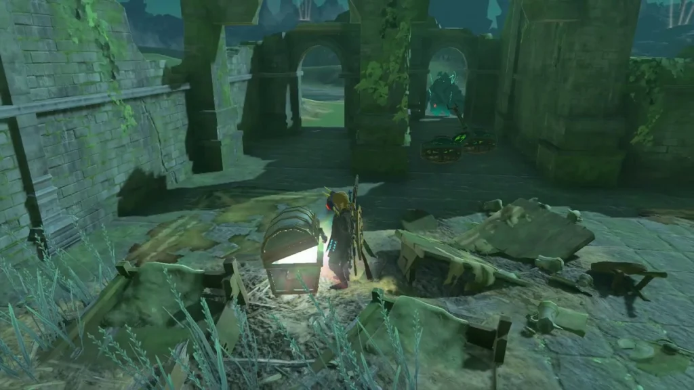
Mở rương Royal Bow
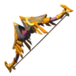
Rương (Royal Bow, hoặc Traveler's Bow, Soldier's Bow, Knight's Bow tuỳ tiến độ). Dưới vòm đá ngập nước quanh -487, -1272, 36, chiếc rương chứa Royal Bow — cây cung thường mạnh nhất trong game. Bơi hoặc leo từ phế tích phía trên mặt nước xuống.Ảnh minh họa: rương Royal Bow dưới vòm ngập nước (2 ảnh)
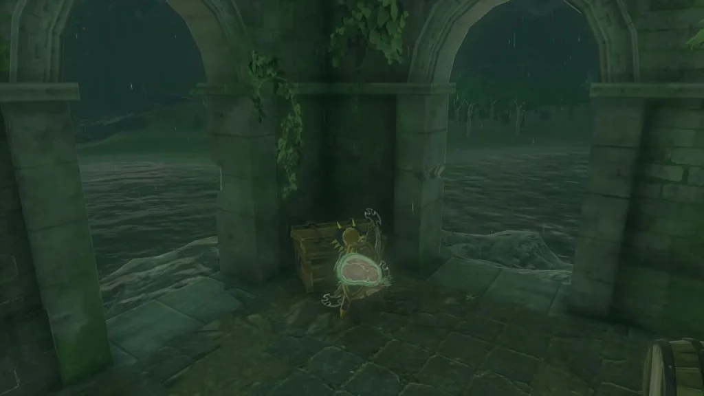
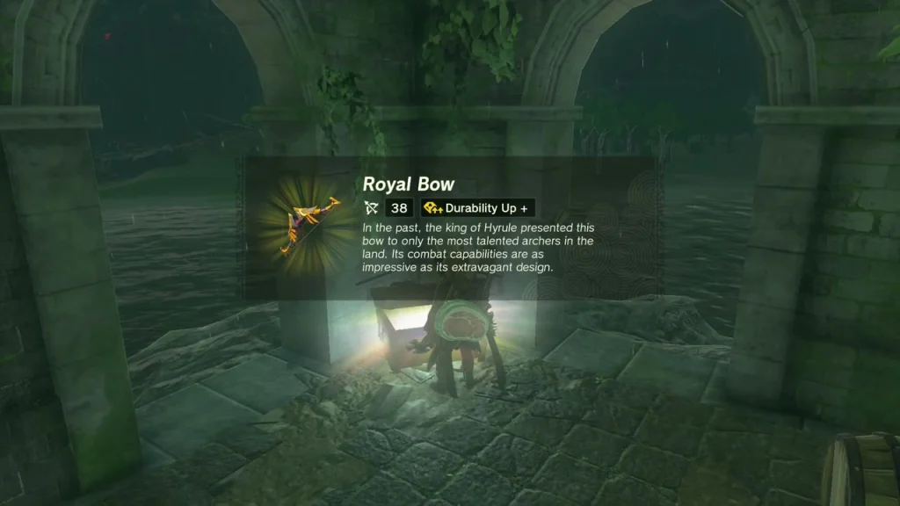
Lấy Lizal Boomerang và Giếng Hồ Aquame
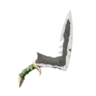
Rương (Lizal Boomerang), Giếng Hồ Aquame. Trên gờ đá quanh -895, -1342, 35, một chiếc rương cho Lizal Boomerang. Giếng Hồ Aquame (-879, -1101) cách đó vài phút đi bộ về phía bắc, ngay bên hồ; nhảy xuống là mở nó trên bản đồ.Ảnh minh họa: Lizal Boomerang và Giếng Hồ Aquame (2 ảnh)
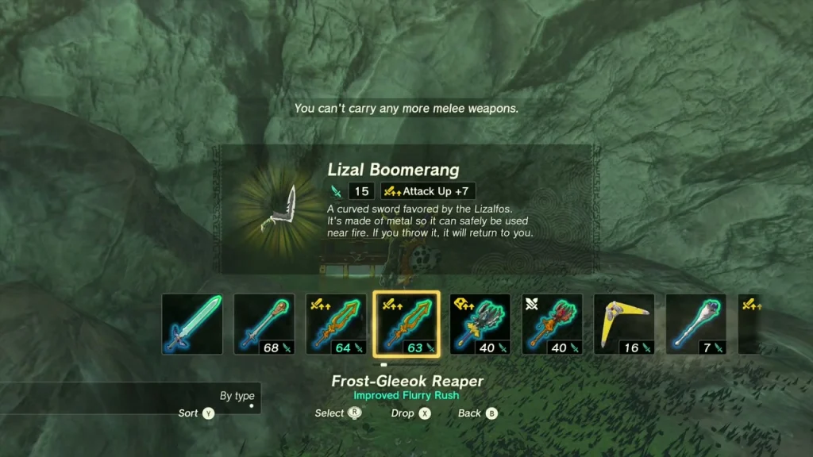
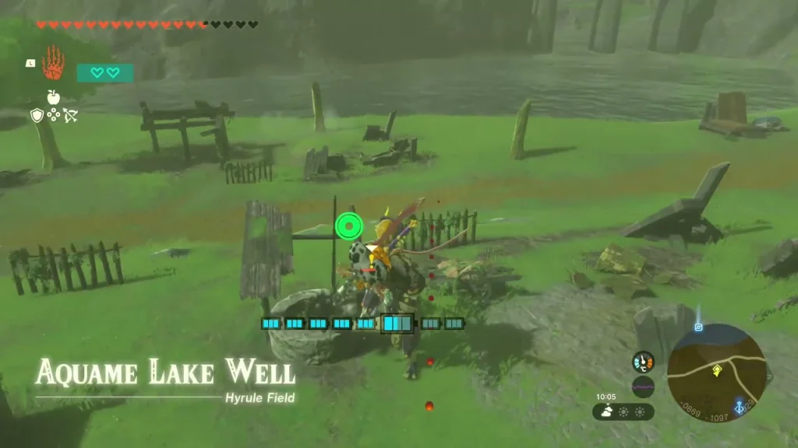
Phế Tích Đấu Trường và Hang Phế Tích Đấu Trường
Hạ Thunder Gleeok
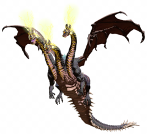
Miniboss: Thunder Gleeok. Con Gleeok bay vòng quanh Phế Tích Đấu Trường (-1151, -1262). Bắn một mũi tên ghép Hoa Bom hoặc một quả bom Zonai vào cánh để nó rơi xuống, rồi đánh vào đầu. Đồ cách điện sẽ giúp bạn chống sét của nó.Ảnh minh họa: Thunder Gleeok và hang phế tích (2 ảnh)
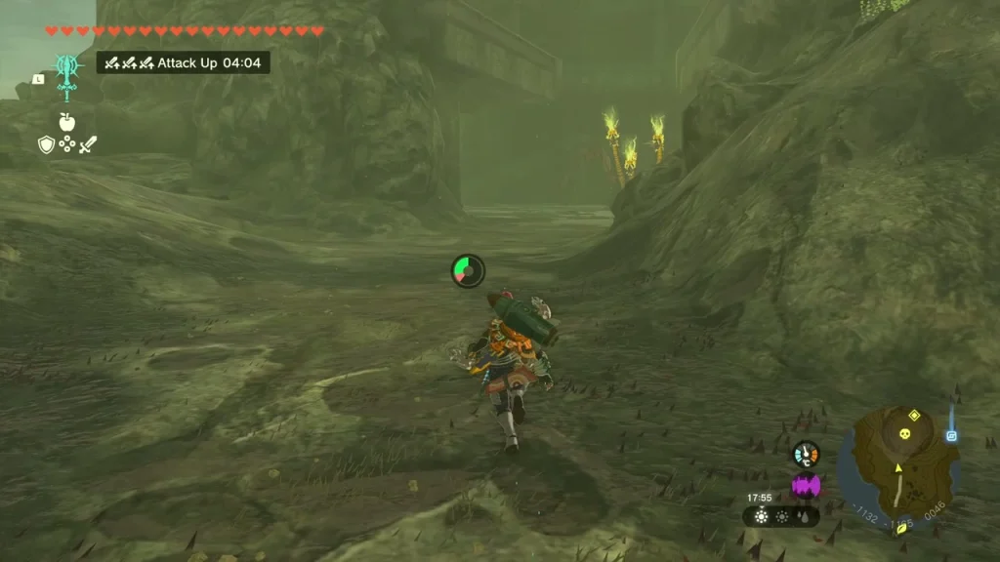
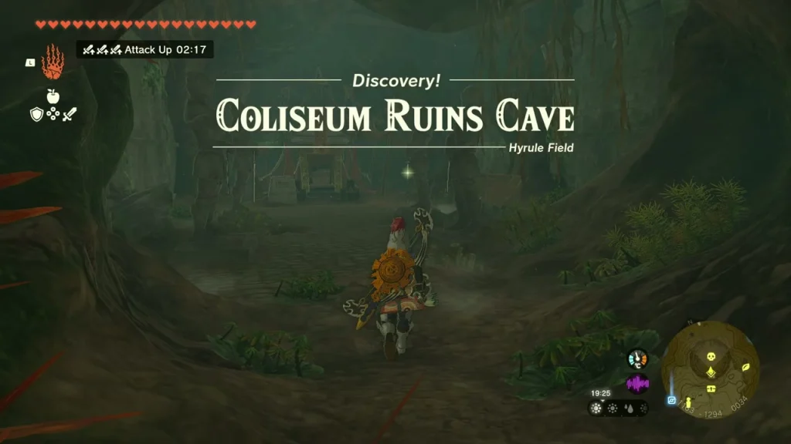
Mở hang và lấy Quần Dài Thức Tỉnh
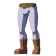
Nhiệm vụ phụ: Misko's Treasure of Awakening III, rương (Quần Dài Thức Tỉnh), Ngọc Bubbul. Gợi ý ghi rằng lối mở ra ở nơi bóng trưa của cột phía nam chạm vào cột phía bắc. Kéo dài bóng của cột phía nam vào giữa trưa là Hang Phế Tích Đấu Trường (-1167, -1310) mở ra. Đọc bia đá bên trong, đi theo hành lang tới cổng đỏ rồi mở rương lấy Quần Dài Thức Tỉnh. Trên đường ra, giết Bubbulfrog để lấy Ngọc Bubbul.Ảnh minh họa: Quần Dài Thức Tỉnh và Ngọc Bubbul (2 ảnh)
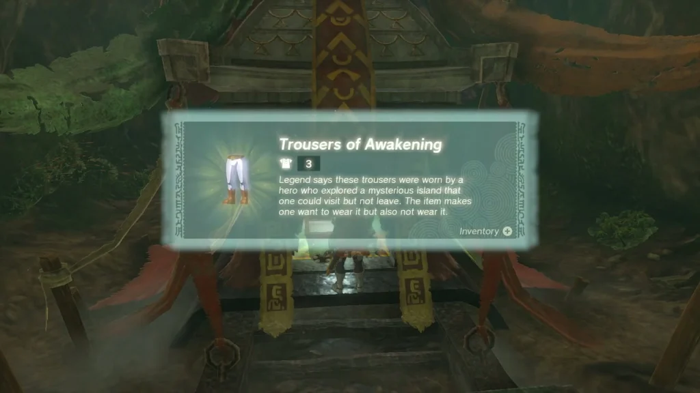
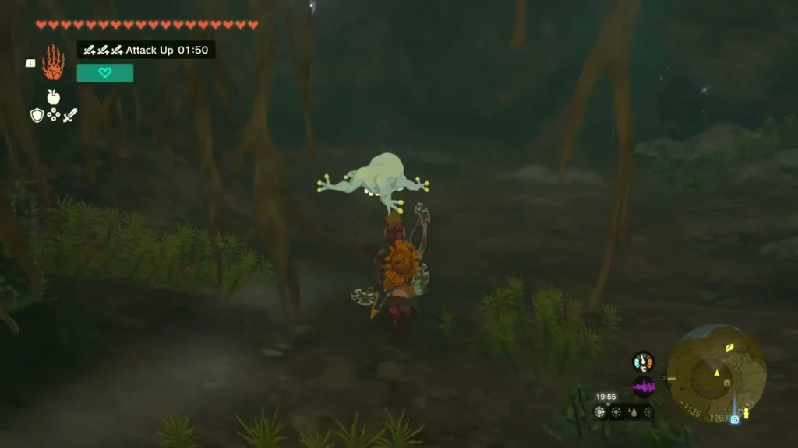
Đền Thờ Nhỏ Tsutsu-um
Đưa quả bóng qua mê cung
Đền Thờ Nhỏ Tsutsu-um (The Stakes Guide You, giải đố). Tsutsu-um đứng trên Đồi Outskirt (-1423, -1350), nhìn xuống Trạm Ngựa Outskirt, với Rễ Sáng Mu-ustust ở bên dưới. Dùng Quạt để lượn tới tấm bia xoay, chèn một cọc vào thành để hãm tấm bia lại, đặt cọc thứ hai ở phía dưới chỗ tấm bia sẽ tựa và nghiêng nó thành cây cầu dẫn tới thanh ray giữa. Đặt quả bóng lên ray, rồi dẫn nó qua bàn mê cung, vượt bánh xe đang quay và xuống hố. Chiếc rương trên cột đang dâng lên (dùng cọc hoặc luồng khí) chứa 5 mũi tên.
Ảnh minh họa: Đền Thờ Nhỏ Tsutsu-um (3 ảnh)
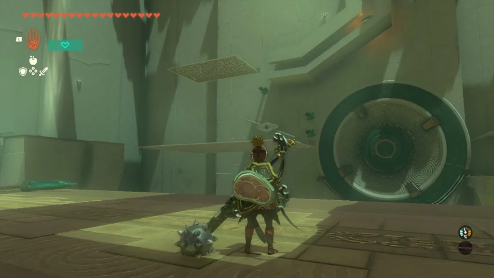
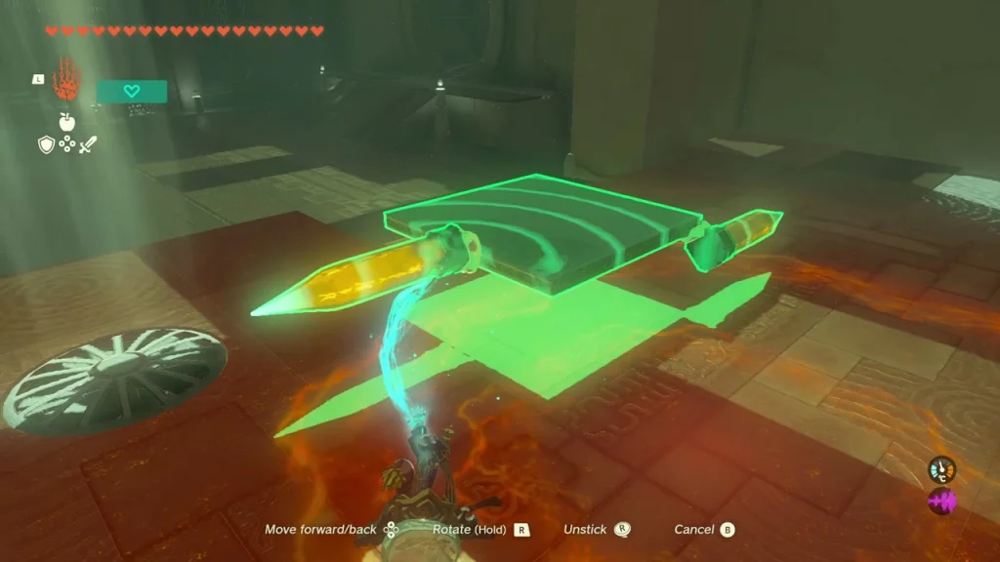
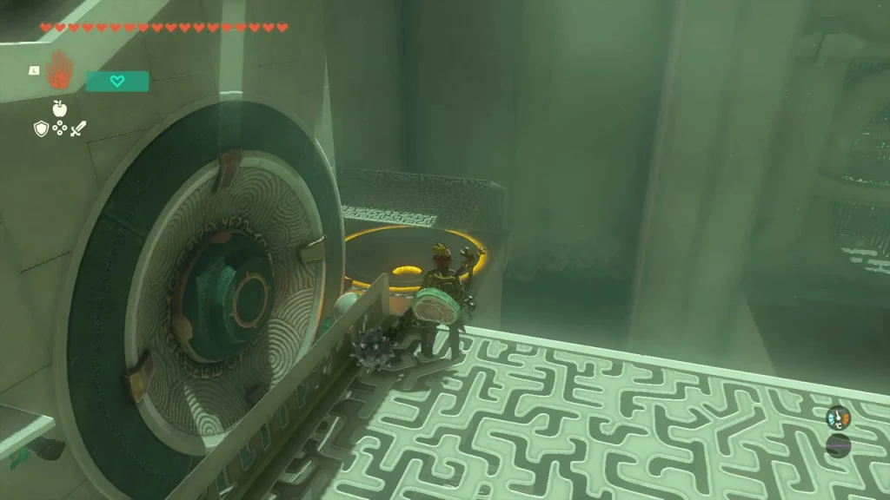
Trạm Ngựa Outskirt và Người Phụ Nữ Vẫy Gọi
Lấy Giant Boomerang và Giếng Trạm Ngựa Outskirt
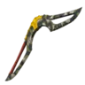
Rương (Giant Boomerang), Giếng Trạm Ngựa Outskirt. Một chiếc rương trong bụi cỏ gần Trạm Ngựa Outskirt chứa Giant Boomerang. Giếng Trạm Ngựa Outskirt (-1460, -1296) chỉ cách đó một quãng ngắn; bước vào và thắp sáng nó.Ảnh minh họa: Giant Boomerang và Giếng Trạm Ngựa Outskirt (2 ảnh)
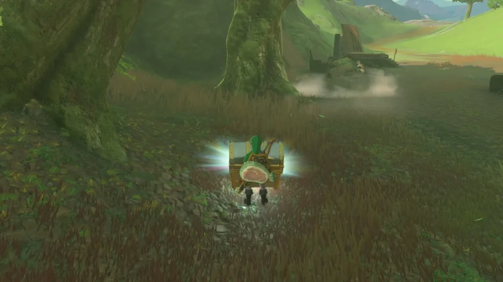
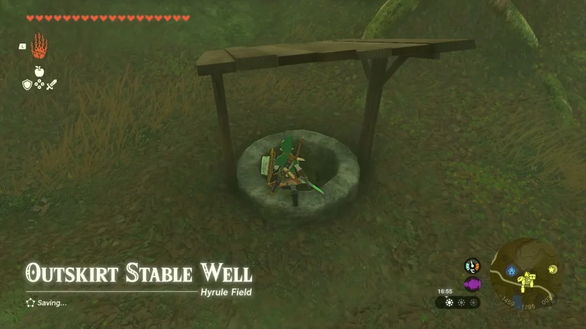
Nhiệm vụ ở Trạm Ngựa Outskirt
The Beckoning Woman (Penn, Trạm Ngựa Outskirt). Một người phụ nữ ở ngã ba gần trạm nhờ bạn đi theo cô ấy về phía đông tới vách đá đầy mảnh vỡ, rồi dẫn người bạn của cô ra; đánh tan toán Yiga phục kích trên đường.
A Picture for Outskirt Stable (Embry): chụp ảnh cây anh đào trên Núi Satori, phía tây bắc trạm ngựa. Serenade to Kaysa (Mastro): đưa người thổi sáo Pyper tới chỗ Đại Tiên gần trạm; mảnh vỡ từ trời chặn đường nên phải đi bộ. The Horse Guard's Request (Toffa): dắt một con ngựa xương, rồi một con vật đã thuần khác, cho người lính gác xem.
Cưỡi ngựa xương và mua Yên Ngựa Hiệp Sĩ
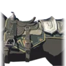
The Horse Guard's Request, Yên Ngựa Hiệp Sĩ và Dây Hàm Hiệp Sĩ. Ngựa xương đi lang thang ở Phế Tích Công Viên Sanidin phía bắc trạm ngựa vào ban đêm; cưỡi một con tới gặp Toffa trước khi trời sáng. Tiêu điểm ngựa ở cửa hàng của trạm: Yên Ngựa Hiệp Sĩ giá 23 điểm, Dây Hàm Hiệp Sĩ bán ngay bên cạnh.Ảnh minh họa: ngựa xương và Yên Ngựa Hiệp Sĩ (2 ảnh)
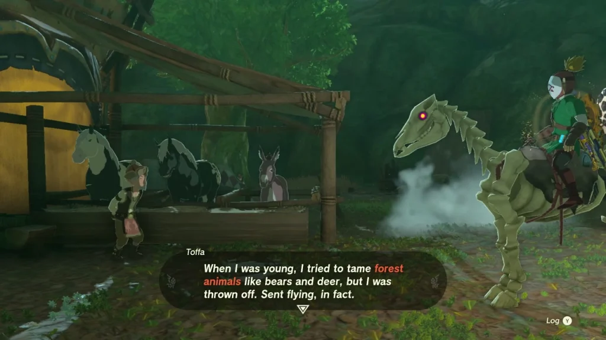
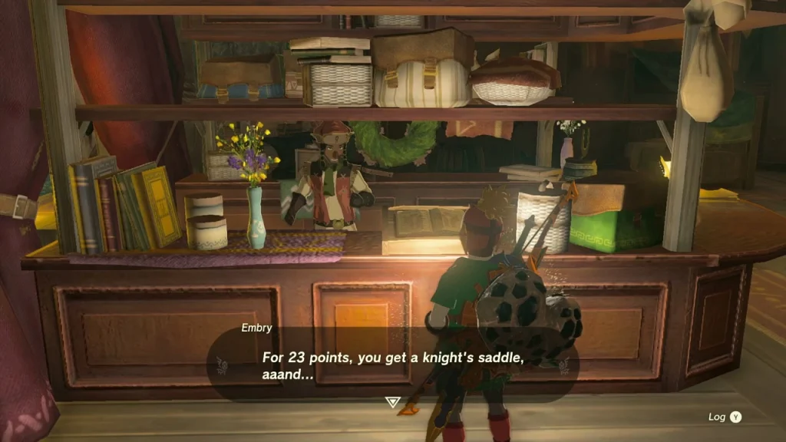
Trạm Ngựa Mini, máy phát Thiết Bị và các giếng Daphnes
Lấy Thiết Bị Zonai từ máy phát
Máy Phát Thiết Bị (Trạm Ngựa Mini). Ở Trạm Ngựa Mini, một Máy Phát Thiết Bị Zonai quanh -1622, -1892 đổ ra Cọc, Lò Xo và nhiều thiết bị khác. Đút một Pin Zonai để nạp lại máy; dùng cho các câu đố ở Tsutsu-um và các Đền Thờ Nhỏ khác.
Ảnh minh họa: máy phát Thiết Bị Zonai (2 ảnh)
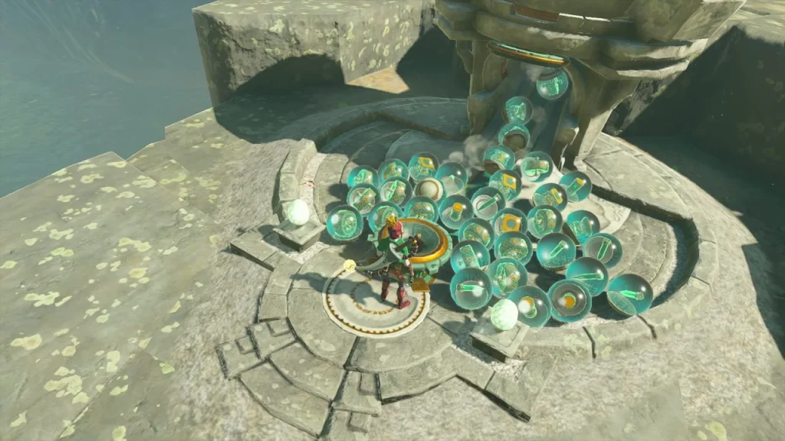
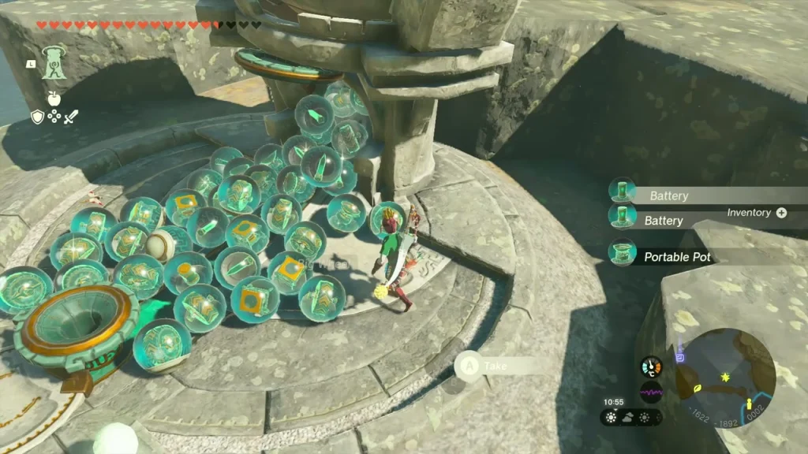
Nhảy xuống Giếng Đồi Outskirt
Giếng Đồi Outskirt. Giếng này (-1680, -1349, 106) nằm trên quả đồi cỏ phía trên Trạm Ngựa Outskirt. Nhảy xuống là mở nó trên bản đồ. Nhiệm vụ mở ra: Disaster in Gerudo Canyon (Quince, chờ ở Cầu Treo Digdogg); những người bạn mất tích của ông ta lần lượt xuất hiện trên các con đường quanh trạm ngựa.
Ảnh minh họa: Giếng Đồi Outskirt (2 ảnh)
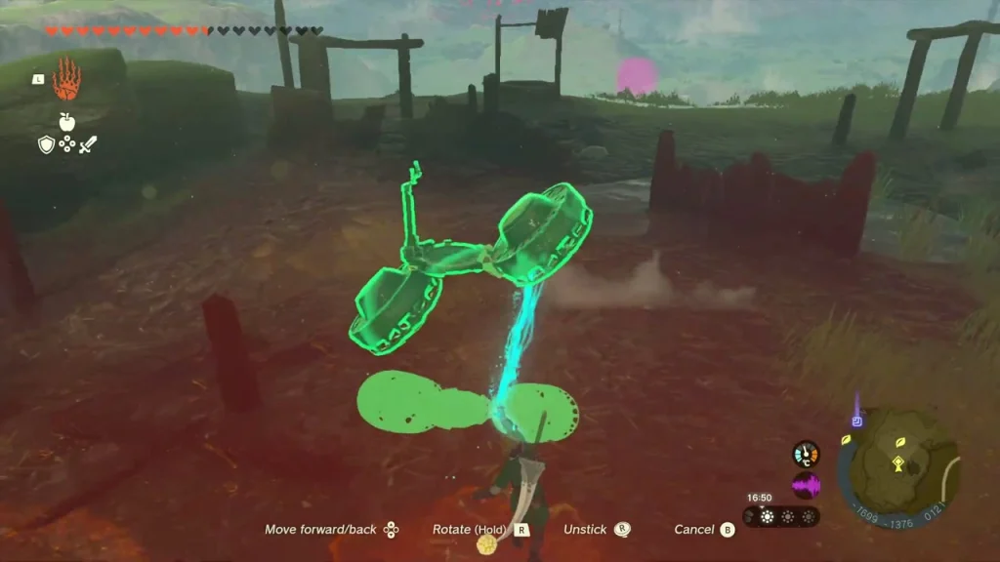
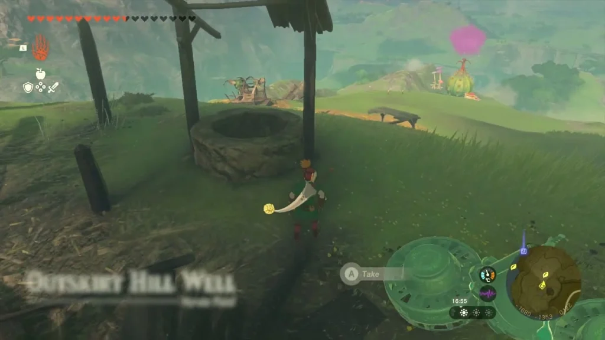
Tới Giếng Núi Daphnes và hạ Battle Talus
Giếng Núi Daphnes, Miniboss: Battle Talus. Giếng Núi Daphnes (-1314, -623) nằm dưới chân núi. Một con Battle Talus đứng xa hơn về phía nam quanh -1350, -780; leo lên lưng nó và đập vào mảng quặng sáng, hoặc phá vũ khí Zonait của nó; một chiếc rương gần đó chứa Topaz.
Ảnh minh họa: Giếng Núi Daphnes và Battle Talus (2 ảnh)
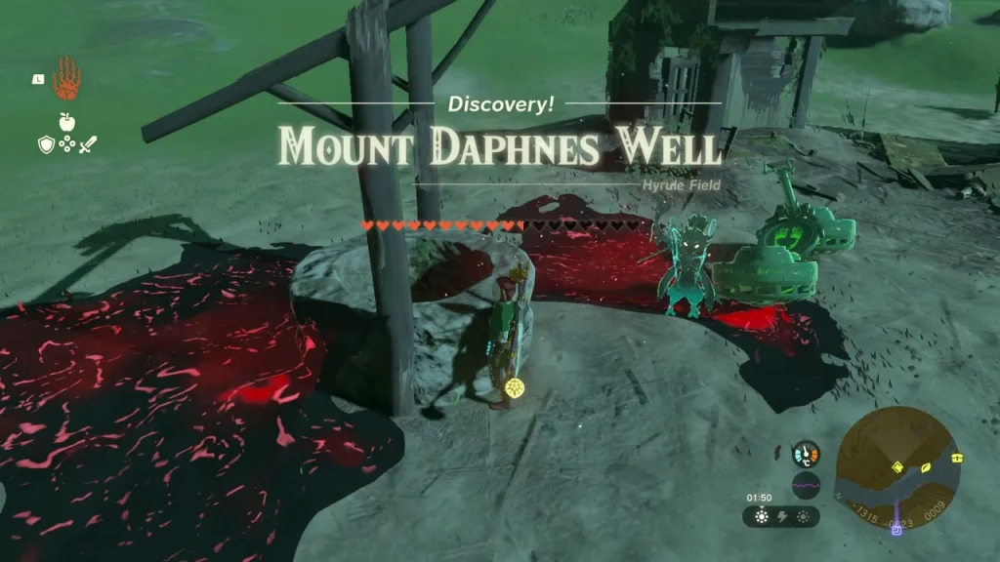
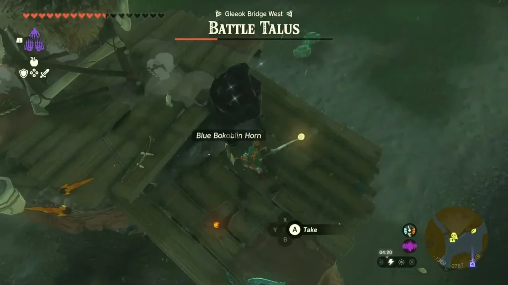
Đánh Blue Hinox
Miniboss: Blue Hinox. Một con Blue Hinox đi lang thang trên đồng cỏ phía tây nam Núi Daphnes. Bắn vào mắt để nó choáng, rồi đánh cận chiến bằng vũ khí mạnh.
Ảnh minh họa: Blue Hinox (2 ảnh)
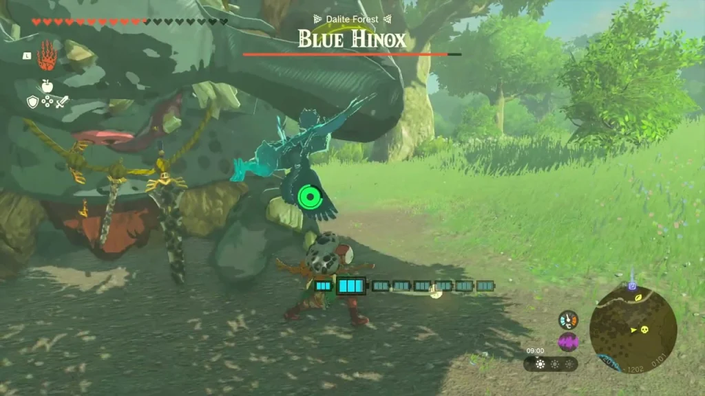
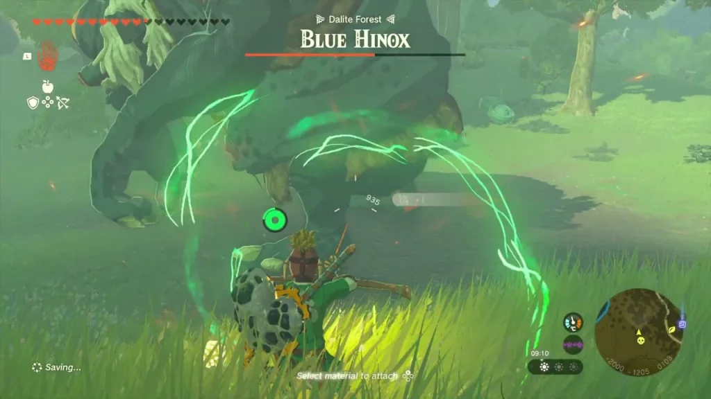
Royal Bow, Đền Thờ Nhỏ Sonapan và Bình Máu
Lấy Royal Bow trên tháp gỗ
Rương (Royal Bow). Quanh toạ độ -1950, -580, 148 về phía tây Hyrule Field, chiếc rương trên giàn gỗ của một ngọn tháp giữ cây Royal Bow thứ hai; leo giàn hoặc lượn từ quả đồi phía trên xuống.
Ảnh minh họa: Royal Bow trên tháp gỗ (2 ảnh)
Giải Đền Thờ Nhỏ Sonapan
Đền Thờ Nhỏ Sonapan (Missing Pathways, giải đố). Sonapan (-1921, -358) nằm ở chân phía đông Núi Satori, với Rễ Sáng Napanos ở bên dưới. Dùng Xuyên qua các gờ nhô, trượt một khối đá xuống dưới rương và chồng thêm một khối bên cạnh để lấy 5 mũi tên, rồi bắc khối đá qua từng khoảng trống và Xuyên qua chúng tới cổng cùng bệ thờ cuối để nhận Ánh Sáng Chúc Phúc.
Ảnh minh họa: Đền Thờ Nhỏ Sonapan (4 ảnh)
Đổi Ánh Sáng Chúc Phúc lấy Bình Máu
 Bình Máu (Tượng Nữ Thần). Đổi bốn Ánh Sáng Chúc Phúc ở Tượng Nữ Thần để lấy Bình Máu hoặc Bình Thể Lực.
Bình Máu (Tượng Nữ Thần). Đổi bốn Ánh Sáng Chúc Phúc ở Tượng Nữ Thần để lấy Bình Máu hoặc Bình Thể Lực.
Ảnh minh họa: đổi lấy Bình Máu (2 ảnh)
Hang Núi Satori
Dọn hang lấy rương Royal và Ngọc Bubbul
 Hang Núi Satori (-2151, -360). Một cái hố dưới chân Núi Satori dẫn xuống. Giết Bubbulfrog bên trái để lấy Ngọc Bubbul. Vào sâu hơn, chiếc rương trong hốc rêu cho Royal Shield, và chiếc rương giữa đám rễ cách đó vài bước cho Royal Bow. Mang Hạt Sáng vì các đoạn hang đều tối.
Hang Núi Satori (-2151, -360). Một cái hố dưới chân Núi Satori dẫn xuống. Giết Bubbulfrog bên trái để lấy Ngọc Bubbul. Vào sâu hơn, chiếc rương trong hốc rêu cho Royal Shield, và chiếc rương giữa đám rễ cách đó vài bước cho Royal Bow. Mang Hạt Sáng vì các đoạn hang đều tối.
Ảnh minh họa: Hang Núi Satori (3 ảnh)
Dâng lễ ở gốc cây anh đào
Lễ vật cho Satori. Phía trên hang trên Núi Satori, đặt một quả táo ở gốc cây anh đào là Thần Satori hiện ra. Cũng chính cây này là chủ đề của nhiệm vụ A Picture for Outskirt Stable.
Ảnh minh họa: dâng lễ ở gốc cây anh đào (2 ảnh)
Hang Hạ Lưu Sông Tamio
Tới chỗ Giáo và Phantom Armor
Hang Hạ Lưu Sông Tamio (-2921, -804). Vào hang từ phía sông và đi theo hành lang tới chiếc rương bên sườn tây, mở ra Giáo Ghép Claymore Hiệp Sĩ. Ở cuối hang, hạ Bàn Tay U Ám (rồi Phantom Ganon hiện ra) và phá vách đá hoặc lớp trầm tích đỏ phía sau; chiếc rương ở đó chứa Phantom Armor, phần thân của bộ Phantom (Phantom Helm và Greaves nằm trong các hang khác).
Ảnh minh họa: Giáo và Phantom Armor (2 ảnh)
Hạt Korok
Các vị trí trong chặng này, theo đúng thứ tự tuyến đường (đơn vị bản đồ, Y càng lớn càng lên bắc). Nhắc nhanh: nhấc tảng đá là dùng Siêu Tay nhấc tảng đá rời lên rồi tìm Korok nhỏ bên dưới; hoàn thành mẫu vòng đá và câu đố khối lập phương là ghép những viên đá thiếu cho khớp vòng hoặc khớp khung khối; Korok trong hũ quả thông nằm sau chiếc hũ đất bạn đập vỡ hoặc bắn vỡ; bắn quả bóng bay và bắn quả bóng bay giấu kín là bắn mũi tên vào quả bóng đang bay; dâng táo hoa quả cho tượng là đặt một quả lên mỗi mặt đá; sửa mái nhà là gắn một tấm ván lên khung nhà trống; Korok ở điểm sáng lấp lánh thì lại gần và bấm nút trước khi nó bay mất; Korok hoa bồ công anh cần một nhát kiếm hoặc mũi tên thật nhanh; đưa Korok mệt tới chỗ bạn nó là cõng nó trên lưng (dù lượn hoặc xe giúp đi nhanh) tới chỗ Korok đang chờ, và cả cặp trả tổng cộng hai hạt; vòng mục tiêu là bay dù lượn hoặc xe qua vòng trước khi hết giờ.
- Hoàn thành mẫu vòng đá (-510, -1176), gần phế tích Phantom Ganon.
- Nhấc tảng đá (-599, -1076) và nhấc tảng đá (-664, -1222) gần Hồ Kolomo.
- Tới vòng mục tiêu trong thời gian cho phép (-594, -1414).
- Lao qua vòng (-1152, -1012), bên Cầu Aquame.
- Đánh rồi bắt hoa bồ công anh (-1053, -1328).
- Đưa Korok mệt tới chỗ bạn nó (-1302, -1331): hai hạt, mỗi con một hạt.
- Dâng táo cho tượng (-1316, -1261).
- Đập hũ quả thông giấu kín (-1428, -1297).
- Nhấc tảng đá (-1518, -1508).
- Kéo nút (-1705, -1706) và nhấc tảng đá (-1700, -1826).
- Bắn quả bóng bay (-1816, -1534) và hoàn thành câu đố khối lập phương (-1763, -1449).
- Sửa mái nhà (-1658, -1321), nhấc tảng đá (-1771, -1243) và đập hũ quả thông (-1598, -1015).
- Đưa Korok mệt tới chỗ bạn nó (-1321, -570), gần Núi Daphnes: hai hạt.
- Bắt điểm sáng lấp lánh (-1408, -464 và -1557, -824), nhấc tảng đá (-1343, -689), đánh rồi bắt hoa bồ công anh (-1440, -846).
- Đi theo bông hoa (-1967, -1090), dâng hoa quả cho tượng (-1816, -971) và lên xem điểm lấp lánh (-1650, -687).
- Nhấc tảng đá (-1968, -594), (-1741, -400) và (-2279, -402); hoàn thành mẫu vòng đá (-2714, -496); dùng dù lượn tới đích (-2921, -481); đưa Korok mệt tới chỗ bạn nó (-1849, -329); đập hũ quả thông giấu kín (-1955, -410).
Cũng trong khu vực này
 Thêm nhiều Korok nằm trong ô xung quanh: nhấc tảng đá (-2140, -1485; -2198, -1679; -2200, -798; -2244, -1740; -2340, -1104; -2600, -669; -588, -559; -764, -673), dùng Xuyên lên điểm đánh dấu (-2220, -693; -2394, -1033; -2672, -1356; -950, -1839), dùng dù lượn tới đích (-1146, -381; -1929, -1823; -2437, -554; -668, -1779), kéo nút (-2818, -1652; -952, -1720), đập hũ quả thông (-1088, -514; -2329, -1825; -611, -1525), đưa Korok mệt tới chỗ bạn nó (-1025, -1857; -509, -1696; -880, -929), đi theo bông hoa (-1202, -1690; -2497, -567), hoàn thành mẫu vòng đá (-1112, -570; -2643, -1532), bắn quả bóng bay (-964, -1606), đốt lá rồi nhấc tảng đá (-793, -1601), đặt tảng đá lên bệ cây (-2352, -741), hoàn thành câu đố khối lập phương (-2640, -322), bắt điểm sáng lấp lánh (-1151, -1788), tới vòng mục tiêu trong thời gian cho phép (-2961, -1400), lên xem điểm lấp lánh (-2867, -1123), leo lên vách chạm điểm đánh dấu (-1402, -1522) và làm mái che cho tượng (-2505, -1589).
Thêm nhiều Korok nằm trong ô xung quanh: nhấc tảng đá (-2140, -1485; -2198, -1679; -2200, -798; -2244, -1740; -2340, -1104; -2600, -669; -588, -559; -764, -673), dùng Xuyên lên điểm đánh dấu (-2220, -693; -2394, -1033; -2672, -1356; -950, -1839), dùng dù lượn tới đích (-1146, -381; -1929, -1823; -2437, -554; -668, -1779), kéo nút (-2818, -1652; -952, -1720), đập hũ quả thông (-1088, -514; -2329, -1825; -611, -1525), đưa Korok mệt tới chỗ bạn nó (-1025, -1857; -509, -1696; -880, -929), đi theo bông hoa (-1202, -1690; -2497, -567), hoàn thành mẫu vòng đá (-1112, -570; -2643, -1532), bắn quả bóng bay (-964, -1606), đốt lá rồi nhấc tảng đá (-793, -1601), đặt tảng đá lên bệ cây (-2352, -741), hoàn thành câu đố khối lập phương (-2640, -322), bắt điểm sáng lấp lánh (-1151, -1788), tới vòng mục tiêu trong thời gian cho phép (-2961, -1400), lên xem điểm lấp lánh (-2867, -1123), leo lên vách chạm điểm đánh dấu (-1402, -1522) và làm mái che cho tượng (-2505, -1589).
Danh sách kiểm Vực Sâu Nam Đồng Bằng Hyrule
| Đồ thu thập | Số lượng | Ở đâu |
|---|---|---|
| Đền Thờ Nhỏ | 2 | Tsutsu-um, Sonapan |
| Rễ Sáng | 1 | Mu-ustust |
| Hang | 3 | Phế Tích Đấu Trường, Núi Satori, Hạ Lưu Sông Tamio |
| Giếng | 4 | Hồ Aquame, Trạm Ngựa Outskirt, Đồi Outskirt, Núi Daphnes |
| Ngọc Bubbul | 2 | Hang Phế Tích Đấu Trường, Hang Núi Satori |
| Rương dưới Vực Sâu | 9 | Zonait Lớn (2), Tinh Thể Kết Tinh Cỡ Lớn, Tinh Thể Kết Tinh Cỡ Lớn (2), 10 mũi tên, Quần Dài Thợ Mỏ, Sundelion, Mặt Nạ Majora |
| Rương trên mặt đất, trong hang và trong đền | 13 | Royal Shield, Royal Bow (3), Lizal Boomerang, Quần Dài Thức Tỉnh, 5 mũi tên (2), Giant Boomerang, Topaz, Giáo Ghép Claymore Hiệp Sĩ, Phantom Armor, Ngọc Bubbul (đếm chung mục trên) |
| Miniboss | 5 | Master Kohga, Thunder Gleeok, Phantom Ganon, Battle Talus, Blue Hinox |
| Trang bị | 4 | Quần Dài Thợ Mỏ, Quần Dài Thức Tỉnh, Phantom Armor, Gaiters of the Depths (mua bằng Poe) |